Welcome to Taffie Home Improvements, where we pave the way for your vision and paint the perfect picture for your property!
At Taffie Home Improvements, we specialize in delivering top-notch paving and painting services tailored to meet your needs. Whether you're looking to enhance the curb appeal of your home or maintain the professional appearance of your business, we've got you covered.
With years of experience and a passion for perfection, our team is dedicated to exceeding your expectations every step of the way. From driveways to parking lots, sidewalks to roadways, our paving experts utilize the latest techniques and materials to ensure durable, long-lasting results that stand the test of time. When it comes to painting, our skilled professionals bring creativity and precision to every project. Whether you're refreshing the exterior of your building or adding a splash of color to your interior spaces, we'll work closely with you to bring your vision to life.
At Taffie Home Improvements, customer satisfaction is our top priority. We pride ourselves on delivering exceptional craftsmanship, attention to detail, and unparalleled customer service. When you choose us for your paving and painting needs, you can trust that you're in good hands.
Painting
Before
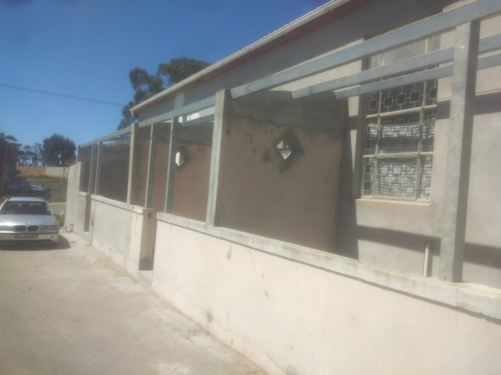
After
Before
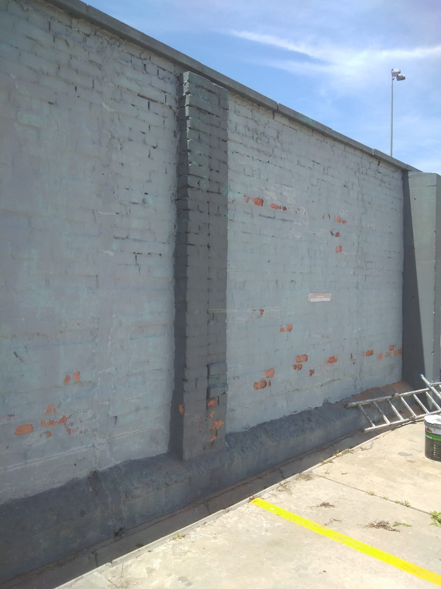
After
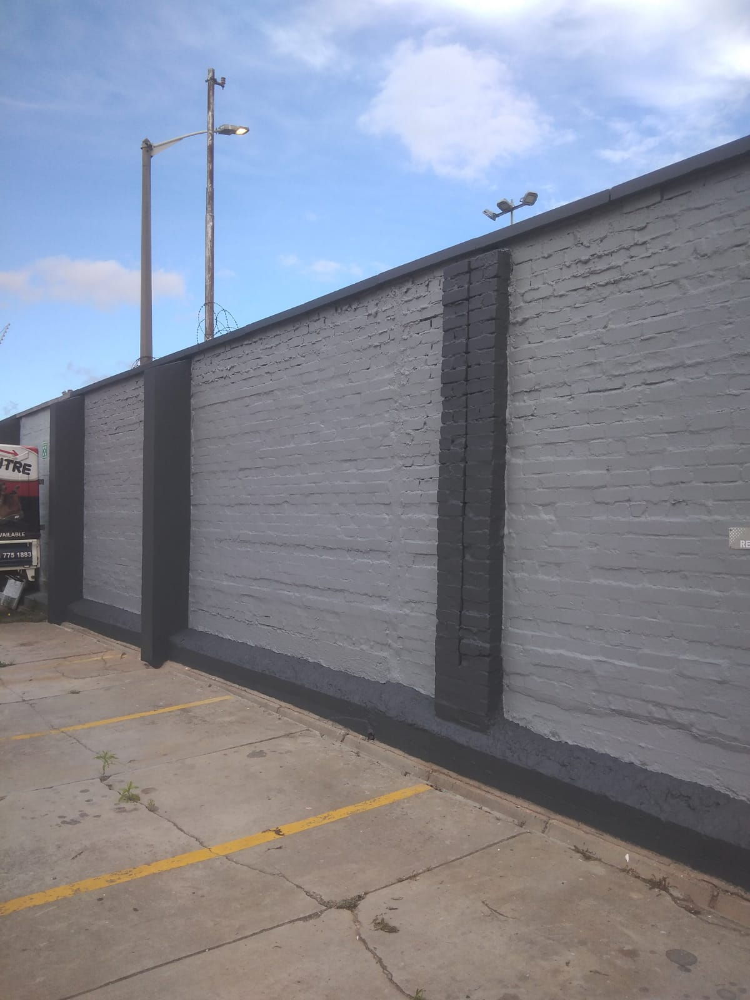
Before
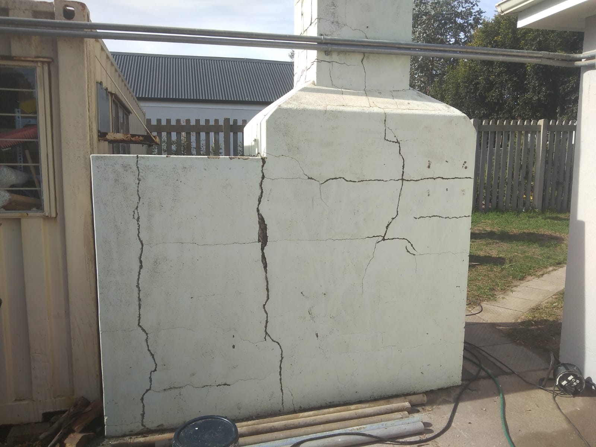
After
Desrciption
Preparation : Clean the walls, remove loose paint, fill cracks, and mask off surrounding areas.
Priming : Apply a primer to improve adhesion and seal the surface.
Choosing Paint : Select exterior-grade paint that withstands weather conditions and complements the building's style.
Application : Use brushes, rollers, or sprayers to apply multiple coats of paint evenly.
Drying and Curing : Allow sufficient drying time between coats and after the final coat for the paint to cure properly.
Finishing Touches : Remove masking tape, inspect for imperfections, and make any necessary touch-ups.
Before
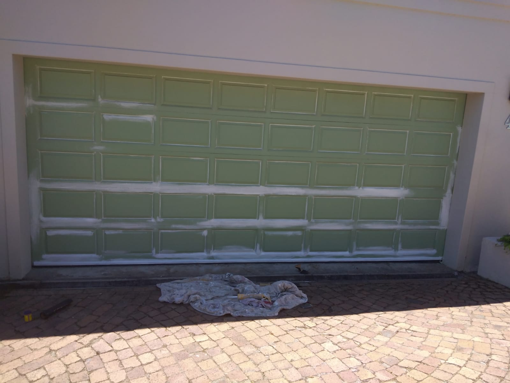
After
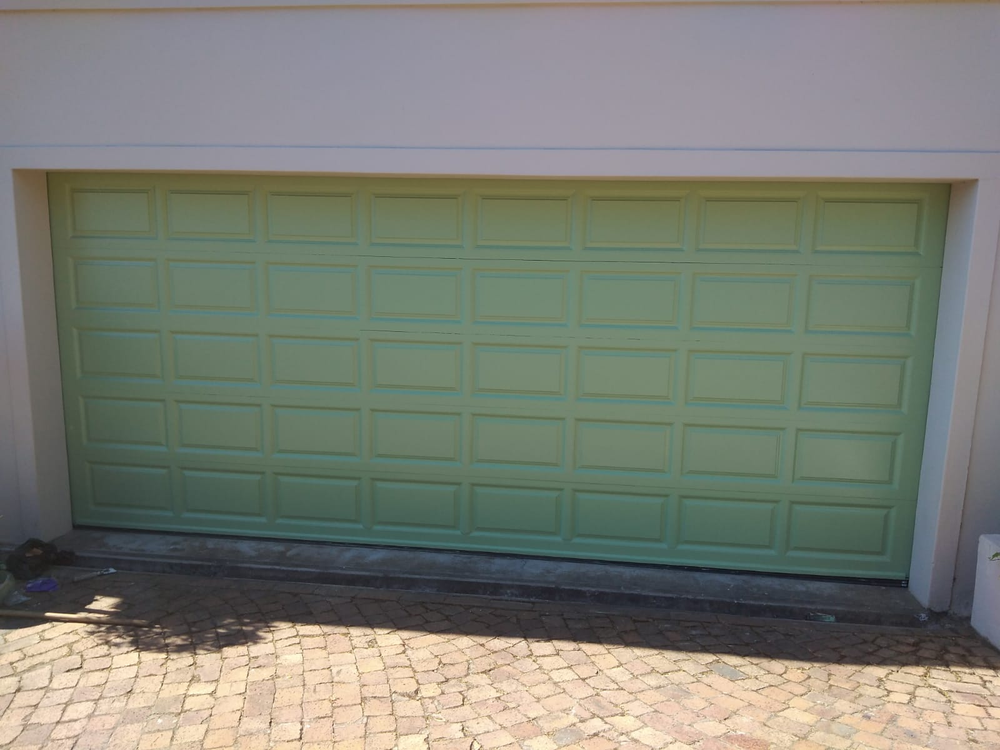
Desrciption
Preparation : Clean the surface thoroughly to remove dirt, grease, and debris. Sand any rough spots and repair any dents or scratches.
Priming : Apply a primer suitable for metal surfaces to ensure proper adhesion and rust protection.
Choosing Paint : Select a high-quality exterior paint specifically formulated for metal surfaces. Consider factors such as durability, weather resistance, and color.
Application : Use a paintbrush or roller to apply the paint evenly over the entire surface of the garage gate. Pay attention to corners and crevices for complete coverage.
Drying : Allow the first coat of paint to dry completely according to the manufacturer's instructions. Apply additional coats as needed for desired coverage and finish.
Finishing Touches : Once the paint has dried, inspect the surface for any missed spots or imperfections. Touch up as necessary for a uniform appearance.
Maintenance : Regularly clean and inspect the painted surface to maintain its appearance and protect against damage from the elements.
Before
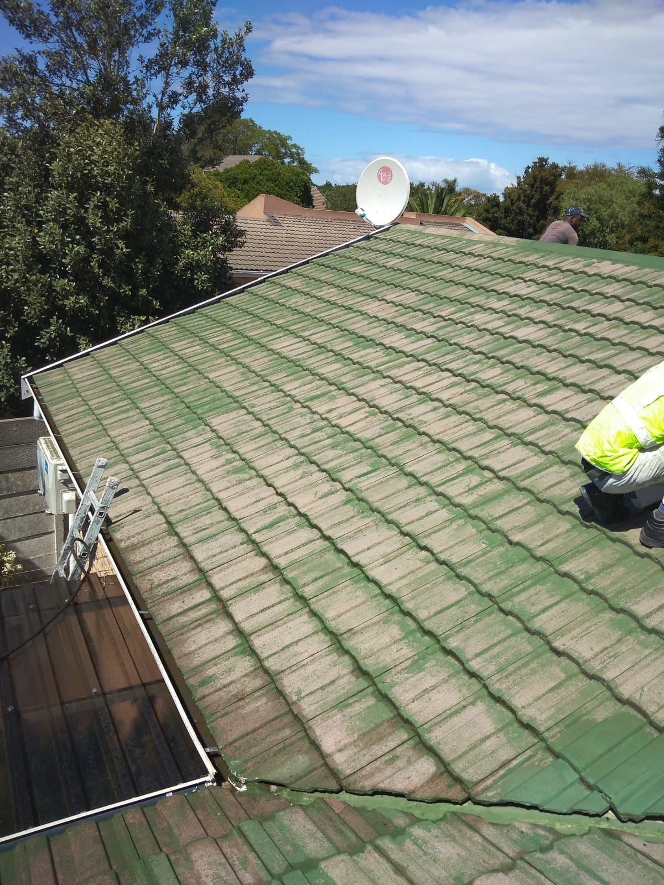
After
Desrciption
Cleaning : Begin by thoroughly cleaning the roof tiles to remove dirt, debris, moss, and algae. Pressure washing or scrubbing with a detergent solution may be necessary.
Repairing : Inspect the roof for any damaged or loose tiles, and repair or replace them as needed. Fill any cracks or holes with an appropriate filler.
Priming : Apply a primer specifically designed for roof surfaces to promote adhesion and provide a base for the paint.
Choosing Paint : Select a high-quality exterior paint formulated for use on roof tiles. Consider factors such as color, durability, and weather resistance.
Application : Use a brush, roller, or sprayer to apply the paint evenly to the roof tiles. Work methodically and carefully to ensure complete coverage.
Drying : Allow the paint to dry thoroughly between coats and after the final coat. Follow the manufacturer's instructions regarding drying times and conditions.
Sealing : Consider applying a clear sealant over the painted tiles to provide additional protection against moisture and UV damage.
Maintenance : Regularly inspect the painted roof tiles for any signs of wear or damage, and touch up as needed to maintain their appearance and protection.
Before
After
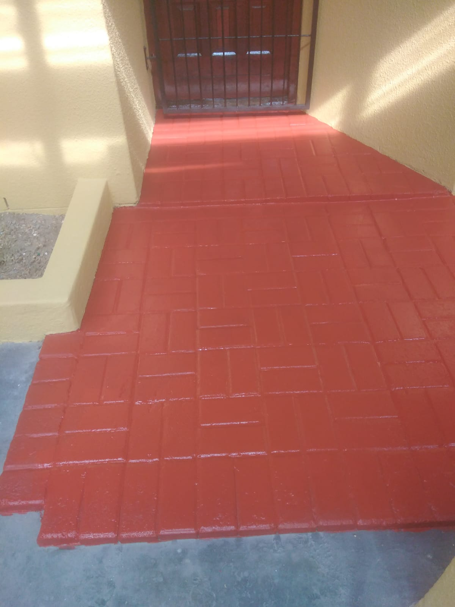
Desrciption
Cleaning : Begin by thoroughly cleaning the paving surface to remove dirt, oil, grease, and any other contaminants. Pressure washing or scrubbing with a detergent solution may be necessary to ensure a clean surface.
Repairing : Inspect the paving for any cracks, holes, or uneven areas, and repair them as needed. Fill cracks with an appropriate filler and level uneven surfaces.
Priming : Apply a primer specifically designed for use on paving surfaces to promote adhesion and provide a base for the paint. This step is especially important for concrete or porous surfaces.
Choosing Paint : Select a high-quality exterior paint suitable for use on paving surfaces. Consider factors such as durability, slip resistance, and weather resistance. Acrylic or epoxy-based paints are commonly used for outdoor paving.
Application : Use a brush, roller, or sprayer to apply the paint evenly to the paving surface. Work in small sections and ensure complete coverage. Pay special attention to edges and corners.
Drying : Allow the paint to dry thoroughly between coats and after the final coat. Follow the manufacturer's instructions regarding drying times and conditions. Avoid walking or driving on the painted surface until it is fully cured.
Sealing (optional) : Consider applying a clear sealant over the painted paving surface to provide additional protection against wear, stains, and UV damage. This step can also enhance the appearance and longevity of the paint job.
Maintenance : Regularly inspect the painted paving surface for any signs of wear or damage, and touch up as needed to maintain its appearance and protection. Clean the surface periodically to remove dirt, debris, and stains.
Before
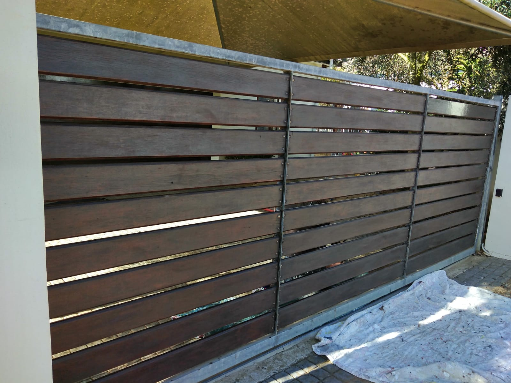
After
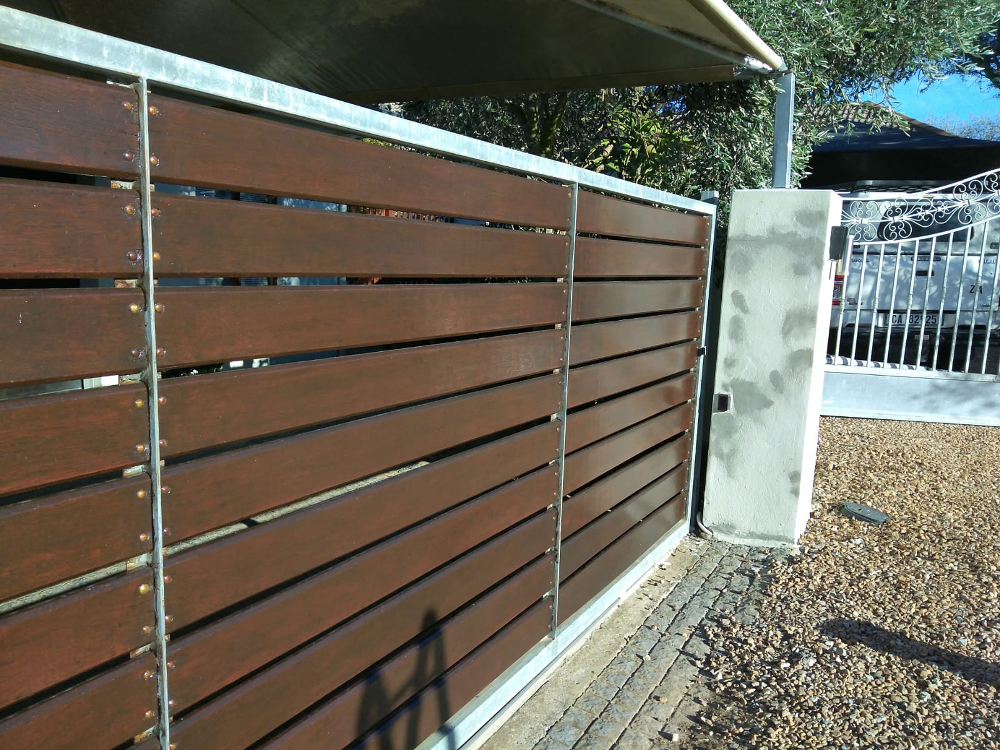
Before
After
Desrciption
Preparation: Begin by ensuring that the wooden chair is clean, dry, and free of any dirt, dust, or debris. Sand the surface lightly to smooth out any rough areas or imperfections.
Choosing Varnish: Select a high-quality exterior varnish specifically designed for outdoor use. Consider factors such as durability, UV protection, and water resistance.
Application: Use a brush or roller to apply the varnish evenly to the wooden gate. Work in the direction of the wood grain to ensure smooth coverage. Apply multiple thin coats rather than a single thick coat for best results.
Drying: Allow the varnish to dry completely between coats and after the final coat. Follow the manufacturer's instructions regarding drying times and conditions. Avoid exposing the gate to moisture or extreme temperatures while the varnish is drying.
Sanding Between Coats: For a smooth and professional finish, lightly sand the surface between coats of varnish using fine-grit sandpaper. This helps to remove any imperfections and promotes adhesion between coats.
Sealing Joints and Ends: Pay special attention to sealing any joints, seams, or exposed end grains of the wooden gate to prevent moisture from seeping in and causing damage over time.
Maintenance: Regularly inspect the varnished wooden gate for any signs of wear or damage, and touch up as needed to maintain its appearance and protection. Clean the surface periodically to remove dirt, dust, and debris.
Before
After
Desrciption
Cleaning : Begin by thoroughly cleaning the paving surface to remove dirt, oil, grease, and any other contaminants. Pressure washing or scrubbing with a detergent solution may be necessary to ensure a clean surface.
Repairing : Inspect the paving for any cracks, holes, or uneven areas, and repair them as needed. Fill cracks with an appropriate filler and level uneven surfaces.
Priming : Apply a primer specifically designed for use on paving surfaces to promote adhesion and provide a base for the paint. This step is especially important for concrete or porous surfaces.
Choosing Paint : Select a high-quality exterior paint suitable for use on paving surfaces. Consider factors such as durability, slip resistance, and weather resistance. Acrylic or epoxy-based paints are commonly used for outdoor paving.
Application : Use a brush, roller, or sprayer to apply the paint evenly to the paving surface. Work in small sections and ensure complete coverage. Pay special attention to edges and corners.
Drying : Allow the paint to dry thoroughly between coats and after the final coat. Follow the manufacturer's instructions regarding drying times and conditions. Avoid walking or driving on the painted surface until it is fully cured.
Sealing (optional) : Consider applying a clear sealant over the painted paving surface to provide additional protection against wear, stains, and UV damage. This step can also enhance the appearance and longevity of the paint job.
Maintenance : Regularly inspect the painted paving surface for any signs of wear or damage, and touch up as needed to maintain its appearance and protection. Clean the surface periodically to remove dirt, debris, and stains.
Before
After
Desrciption
Preparation: Begin by selecting a suitable surface, often wood, prepared with gesso to create a smooth, absorbent base. The surface is then carefully sanded and cleaned to ensure proper adhesion of the paint.
Sketching : Outline the design of the icon using pencil or charcoal, adhering to traditional iconographic conventions and symbolism. This step requires precision and attention to detail to capture the intended imagery accurately.
Base Layers : Apply thin layers of paint, starting with lighter colors and gradually building up to darker shades. Traditional egg tempera or acrylic paints are commonly used, with each layer carefully applied and allowed to dry before proceeding.
Highlights and Details : Add highlights and intricate details using finer brushes and delicate strokes. These details often include facial features, garments, and symbolic elements, with emphasis on achieving a sense of depth and dimensionality.
Gold Leaf : Incorporate gold leaf or metallic paint for halos, backgrounds, and embellishments, symbolizing divine light and transcendence. Applying gold leaf requires skill and precision to achieve a smooth, luminous finish.
Varnishing : Once the painting is complete and thoroughly dry, apply a protective varnish to enhance colors, protect against dust and moisture, and impart a subtle sheen.
Finishing Touches : Inspect the icon for any imperfections or areas that may require touch-ups. Traditional iconographers often sign their work discreetly, typically on the back or bottom edge of the icon.
Paving
Before
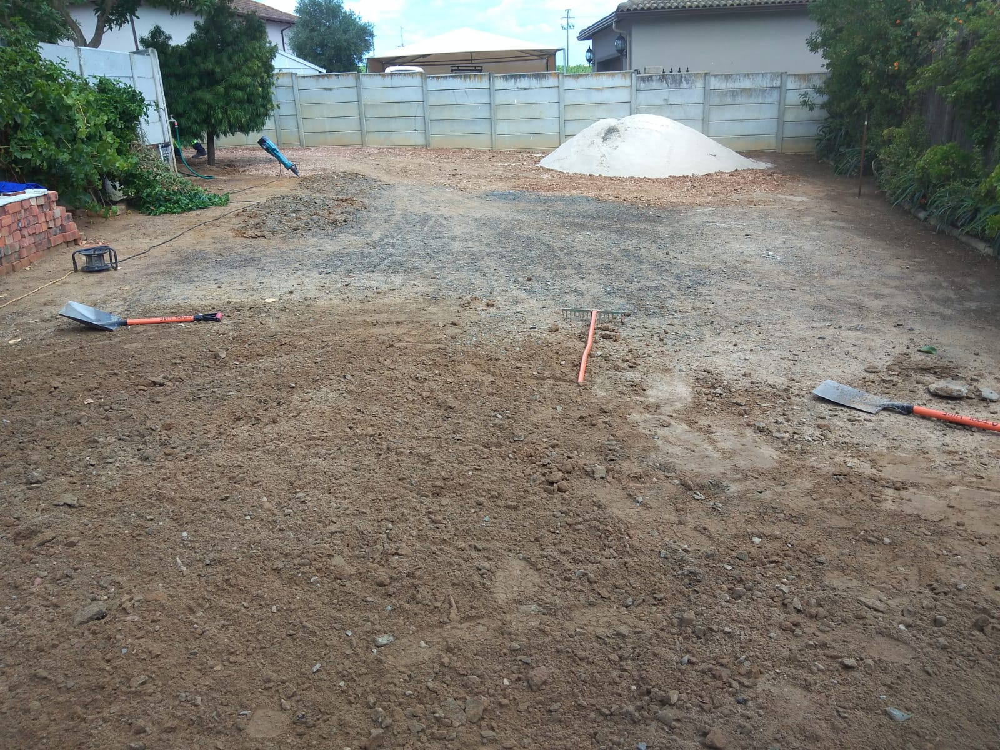
After
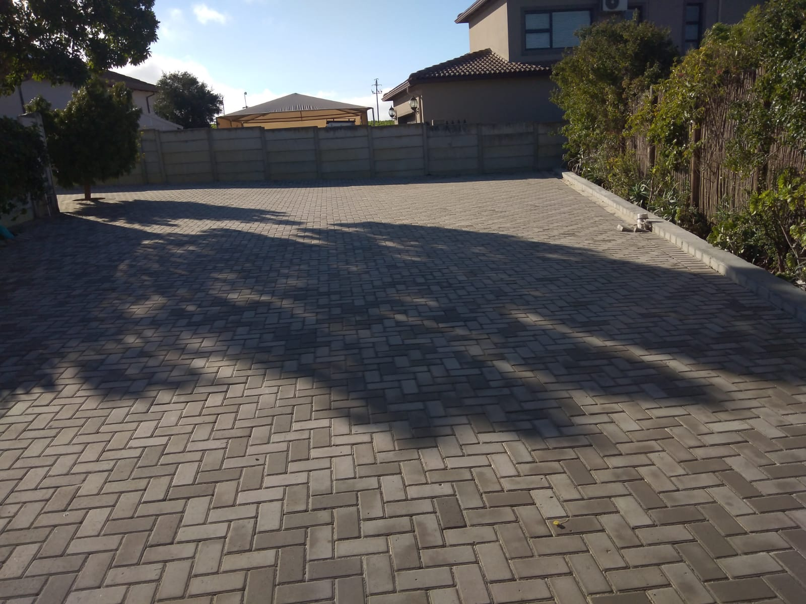
Desrciption
Before
After
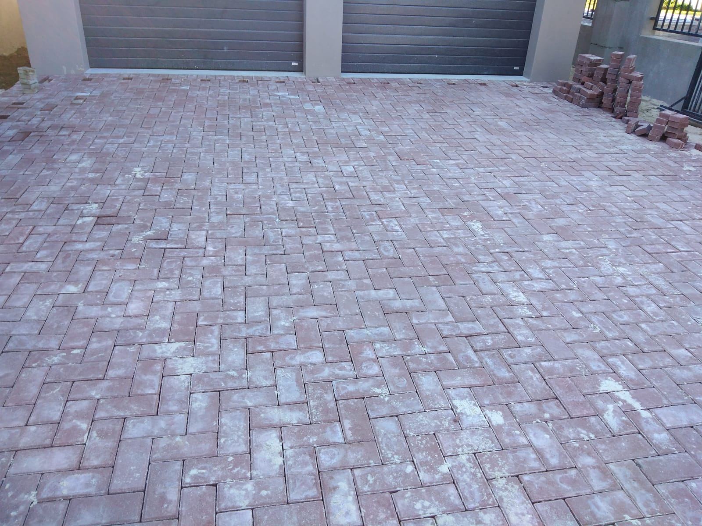
Desrciption
Planning and Design : Begin by planning the layout and design of the brick paving, considering factors such as the shape of the area, desired pattern, and any drainage requirements.
Site Preparation : Prepare the area by excavating the soil to the desired depth, typically around 6-8 inches, depending on the type of soil and intended use of the paved area. Ensure the ground is level and compacted.
Base Installation : Lay a base layer of crushed stone or gravel, known as the sub-base, to provide stability and drainage. Compact the sub-base thoroughly to create a firm foundation for the bricks.
Edge Restraints: Install edge restraints along the perimeter of the paved area to contain the bricks and prevent shifting over time. These can be made of metal, plastic, or concrete, and should be securely anchored into the ground.
Sand Bedding : Spread a layer of coarse sand over the compacted sub-base to create a smooth and level surface for laying the bricks. Use a screed or straight edge to ensure uniform thickness.
Brick Installation : Lay the bricks in the desired pattern, starting from one corner and working outward. Use a string line or chalk lines to maintain straight edges and proper alignment. Leave small gaps, known as joints, between the bricks for sand or mortar.
Cutting Bricks : Use a brick saw or chisel to cut bricks to fit along the edges and around obstacles such as trees or structures.
Joint Filling : Fill the joints between the bricks with sand or mortar, depending on the desired finish. Sweep the material into the joints and compact it with a tamper or vibrating plate compactor to ensure stability and prevent weeds from growing between the bricks.
Finishing Touches : Clean the surface of the paved area to remove any excess sand or mortar residue. Apply a sealer if desired to protect the bricks and enhance their appearance.
Maintenance : Regularly inspect the paved area for signs of wear, settling, or damage, and make any necessary repairs or adjustments to ensure the longevity and stability of the brick paving.